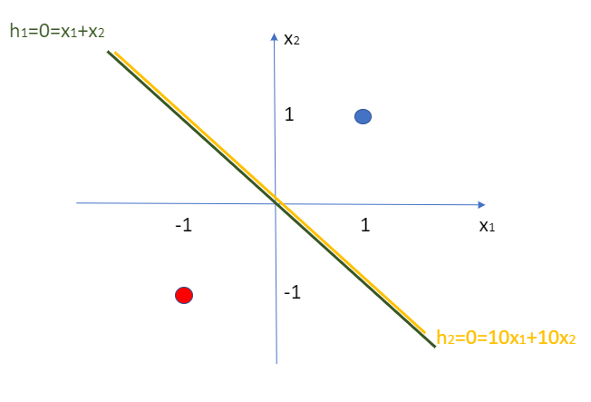

Chapter 13 – Vanishing Gradient 1¶
In the chapter of early stopping, we arrived at a conclusion that a good model usually has low cost and low error. However, if a model has low lost and low error, then does that guarantee it to be a good model? I know this is confusing, let’s look at the following example.
For instance, we have two points: (1,1) and (-1,-1). There are two AI models that can separates them: \(h_1 = x_1 + x_2\) and \(h_2 = 10*x_1 + 10*x_2\).
Which one is the better model though? According to our old method, the second model (\(h_2 = 10x_1+10x_2\)) is better because it has much lower lost and error as shown in the table below.
Actual Result |
\(\hat{y}_A\) of Model A |
Error of Model A |
\(\hat{y}_B\) of Model B |
Error of Model B |
|
|---|---|---|---|---|---|
(1,1) |
1 |
0.88 |
0.12 |
0.99999979 |
0.00000021 |
(-1,-1) |
0 |
0.12 |
0.12 |
0.00000021 |
0.00000021 |
where $\hat{y}_A $ for (1,1) \(=\frac{1}{1+e^{-(1*1+1*1)} }\approx 0.88\) and \(\hat{y}_A\) for (-1, -1) \(=\frac{1}{1+e^{-(-1*1-1*1)}} \approx 0.12\).
So if we assume that the error of the model can be represented by the prediction by the same model, then we can have the table above.
The point is, the second model seems to have much lower error than the first one even though they are the same separators. This is because the \(\sigma(20)\) for model B is much more approximate to 1 than the \(\sigma(2)\) for model A. Model B seems to be much more confident but that is unjustified.
To dig into the problem, which is called the vanishing gradient, we need to notice that although the ratio of weights of the two models are the same, yet the gradient of the \(\sigma(h)\) function will be close to zero when \(h\) is really huge. This can be visually seen in the sigmoid function figure, where the gradient is basically flat at the far right hand side.
This in turn will make the gradients of the cost function in all directions to be close to zero. Remember that in order to update the weight, we need to compute the gradient of the cost function with respect to that weight (equation 1 in chapter Backpropagation). This equation involves the term of \(\frac{\delta \hat{y}}{\delta h_2}\), which is the gradient of the activation function (i.e. sigma function). If this term is close to zero, then the whole cost function, as a result, will be close to zero. This implies that we are updating the weight with \(\Delta w\) which is close to zero. We are going nowhere.